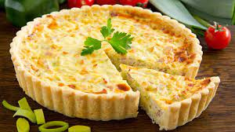

6.Quiche
A Quiche is a French tart consisting of pastry crust filled with savoury custard and pieces of cheese, meat, seafood or vegetables. The best-known variant is quiche Lorraine, which includes lardons or bacon. Quiche can be served hot or cold. It is popular worldwide.